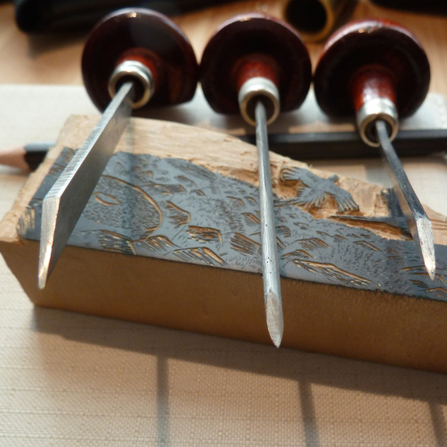
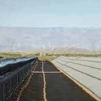
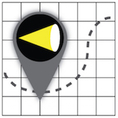

Our Team
Award-winning journalists and entreprenuers

Celeste LeCompte
Independent Journalist
Amy Westervelt
Independent Journalist
Celeste is a media entrepreneur and independent journalist. Her work focuses on business model innovation for sustaining strong journalism and the communities it serves. As a co-founder and business manager of Climate Confidential, she was responsible for distribution and partnership strategies, including Local Edition. Previously, she was the managing editor and director of product for Gigaom Research, and the editor of Sustainable Industries magazine. Her writing has appeared in Scientific American, Smithsonian, Outside, and BusinessWeek. She was a 2015 Fellow at the Nieman Foundation for Journalism at Harvard University.
Amy is an award-winning journalist with more than 15 years of experiencing covering the environment, business, technology and health. She is currently a contributor to The Guardian UK and The Wall Street Journal. Her work has also recently appeared in Fast Company, Smithsonian, and Aeon. As a co-founder of Climate Confidential, she helped develop relationships with national publications and spearheaded a series of events throughout 2014, culminating in a symposium on lab-grown meat in New York. In 2007, Amy was awarded the Folio Eddy for her feature on the potential of algae as a feedstock for biofuels.
Fun Fact: Amy and Celeste have been collaborating on storytelling and media innovation for more than a decade.
Our History
A brief history of the Boxwood Bureau
-

19th Century
The Boxwood Revolution
At the turn of the 19th century, wood engraver Thomas Bewick literally turned the world of printing on its end. A fine artist and naturalist, Bewick discovered that if he used a slow-growing wood with a very dense grain, he could use the very precise tools used by metal engravers to carve images into the end grain of the wood. Bewick's wood of choice was boxwood, and the durable illustrations the new technique created could be printed on the same presses — at the same time — as metal type. It was the birth of low-cost, illustrated printing, and it fueled a revolution in journalism, as more accessible, affordable publications drew new audiences.
-

February 2014
Climate Confidential
Climate Confidential was a year-long, award-winning environmental journalism project. Funded by readers, Climate Confidential produced original, in-depth environmental journalism that was distributed through a network of partners including The Atlantic, Quartz, Scientific American, Smithsonian, Popular Science, Modern Farmer, and more.
-

August 2014
Local Edition
Local Edition was a ground-breaking series of environmental stories produced in partnership with local newspapers and community media. Funded by readers, Local Edition projects appeared in publications as diverse as The Japan Times and The Davis (Calif.) Enterprise
-
June 2015
Introducing the Boxwood Bureau
We're looking forward to making history together!